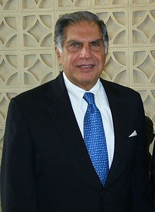

Ratan Tata

Khi Ratan Tata còn nhỏ, mỗi lần tan học, bà của ông thường cho tài xế lái chiếc Rolls-Royce mà ông mô tả là “to lớn và cổ xưa” đến trường học đón ông và anh trai. Tata đặt cho chiếc xe đó biệt danh là “cỗ xe cồng kềnh, cũ kỹ”. Sau đó, chiếc xe chở hai anh em nhà Tata đến Tata Palace, một tòa nhà màu trắng xây theo phong cách Baroque (Ba-rốc), nằm giữa trung tâm thành phố Mumbai với 50 gia nhân phục vụ. “Cả hai anh em đều cảm thấy xấu hổ với bạn bè vì chiếc xe ấy nên chúng tôi thường xuyên tìm cách tự đi bộ về nhà”, Tata vừa cười vừa kể lại như vậy.
Trong ký ức của Tata, một trong những điều làm ông nhớ đến truyền thống cao quý của gia đình chính là hình ảnh ông cố Jamsetji Tata, người được biết đến như là vị thánh bảo trợ cho các doanh nghiệp Ấn Độ và là một trong những người đầu tiên xây dựng nền kinh tế của nước này. Ông đã cùng gia đình xây dựng công ty sản xuất thép đầu tiên ở Ấn Độ, nhà máy thủy điện đầu tiên, hãng hàng không đầu tiên, khách sạn siêu sang đầu tiên – khách sạn Taj Mahal Palace nổi tiếng ở Mumbai.
Cha của Tata là Phó chủ tịch Hội đồng quản trị của Tập đoàn Tata. Còn Tata từ lâu đã nổi tiếng là một doanh nhân hàng đầu của cả nền kinh tế Ấn Độ. Ông cũng là một trong những doanh chủ vĩ đại của Ấn Độ. Khi ông đến tuổi trưởng thành cũng là lúc Ấn Độ trở thành một trong những trung tâm kinh tế của thế giới. Ông đã định hình lại các doanh nghiệp lớn và dẫn dắt để chúng trở thành những công ty cổ phần có giá trị nhất.
Trong suốt quãng thời gian đi học, Tata không có biểu hiện nào khiến cho người ta nghĩ ông sẽ trở thành biểu tượng kinh tế gắn liền với sự trỗi dậy của nền kinh tế Ấn Độ trên sân chơi toàn cầu. Mặc dù ông thích học văn học của Anh và Pháp nhưng Tata cho rằng: “Dù bạn có thích hay không, bạn vẫn phải tới trường. Đi học là việc mà bạn chán ghét khi còn ở trường, hoài nghi khi đã ra trường và trân trọng khi đã trải qua những thăng trầm của cuộc đời.”
Tata được gửi đến Mỹ để học chuyên ngành về kiến trúc và kỹ thuật kết cấu tại Đại học Cornell. Sau khi tốt nghiệp cử nhân năm 1962, ông trở lại Ấn Độ. Bác của ông là J.R.D Tata, người lúc đó đang nắm quyền kiểm soát công ty gia đình, đã khuyên ông không nhận lời mời làm việc từ IBM. Thay vào đó, ông được cử tới làm việc tại Công ty Sắt thép Tata, nơi ông phải xúc đá và phụ giúp đưa than vào lò nung, làm việc cùng với những công nhân bình thường khác.
Bác của ông đặt ông vào vị trí của một người tạo ra sự thay đổi, giao cho Tata trọng trách điều hành các công ty đang gặp khó khăn, hết công ty này đến công ty khác, trong những lĩnh vực khác nhau như điện tử tiêu dùng hay dệt may. Năm 1981, ông bác J.R.D Tata kết thúc vai trò Chủ tịch Hội đồng quản trị của Công ty Công nghiệp Tata và ông trở thành người kế nhiệm của người bác. Mười năm sau, ông trở thành Chủ tịch Hội đồng quản trị Tập đoàn Tata, đồng thời kế thừa một nhóm hơn 80 công ty hoạt động trong tất cả các lĩnh vực và các công ty này đều được quản lý rất lỏng lẻo. Tata chia sẻ rằng: “Mục tiêu tôi đề ra lúc đó là tái cấu trúc để chúng tôi có ít công ty hơn nhưng đồng bộ hơn và cố gắng thoái vốn ở những chỗ khác.”
Nỗ lực của ông vấp phải nhiều sự tranh cãi. Khi ông bán công ty sản xuất xà phòng cho Lever Brothers, mọi người đã phản ứng rất dữ dội. “Phản ứng tôi nhận được từ các nhân viên, báo chí và các cổ đông thật khó tin”, ông nhớ lại. “Tôi không có lấy một người ủng hộ, nhưng thật ra tôi đã kiếm được rất nhiều tiền về cho các cổ đông và tôi cũng đã đạt được thỏa thuận với Lever để họ không sa thải các nhân viên cũ. Tôi nghĩ mình đã làm được một điều tốt cho tất cả mọi người. Nhưng mọi người công kích tôi kinh khủng đến mức tôi phải chùn bước và kế hoạch cải tổ toàn diện cho các công ty còn lại đã phải hoãn lại.”
Nhưng sau một thời gian, ông đã thuyết phục được mọi người, mang kỷ luật cần thiết trở lại với doanh nghiệp và biến Tập đoàn TaTa từ một tổ hợp kinh doanh chỉ được biết tới ở Ấn Độ trở thành một công ty toàn cầu thực sự với doanh thu hằng năm lên tới 60 tỷ đô-la. Ông đã mua lại những tên tuổi như Tetley, Jaguar, Land Rover và Corus. Bất chấp lời khuyên của bạn bè và đồng nghiệp, ông thúc đẩy sự ra đời của một trong những thương hiệu xe hơi bản địa đầu tiên ở Ấn Độ, Indica, vào năm 1998 và gây chú ý với chiếc xe Nano rẻ nhất thế giới vào năm 2009. Ông được xưng tụng là một chính khách tài giỏi trong giới doanh nhân Ấn Độ.
Việc ông trở về và nắm quyền lãnh đạo công ty có phải là một kế hoạch đã được sắp đặt từ trước hay không?
Tôi không nghĩ vậy. Tôi học đại học ở Mỹ và một điều tôi mãi không thể chịu được là thời tiết giá lạnh ở Ithaca, New York. Vì vậy, tôi đã chuyển tới Los Angeles, nơi có khí hậu ấm áp hơn, có một công việc khá thoải mái trong một công ty kiến trúc và không hề có ý định trở về Ấn Độ. Ở tuổi đó, tôi còn chẳng nghĩ đến chuyện trở về Ấn Độ, chứ đừng nói tới chuyện làm việc cho công ty của gia đình. Nhưng khi tôi làm ở công ty kiến trúc được một năm rưỡi thì bà của tôi bị ốm và muốn tôi trở về. Cha mẹ tôi ly dị khi tôi còn rất nhỏ và bà là người đã nuôi dạy tôi khôn lớn. Vì vậy, tôi tạm thời quay lại quê nhà để ở bên cạnh bà.
Thực tế, công việc đầu tiên tôi có là một việc làm ngắn hạn, kéo dài khoảng 15 ngày tại IBM World Trade. Trước đó, tại Mỹ, tôi từng gặp Tom Watson – CEO của IBM và ông ấy bảo tôi nhất định phải gặp người của IBM ở Ấn Độ nếu tôi về nước. Ông ấy đã viết một lá thư giới thiệu và đó là công việc đầu tiên tôi có khi trở về nước. Tôi chưa bao giờ thật sự làm việc cho IBM vì bác của tôi gọi đến để trách tôi. Ông ấy nói: “Cháu không thể đi chỗ khác làm việc được, cháu phải làm việc cho gia đình chứ.” Vào thời điểm đó, máy đánh chữ điện tử rất khan hiếm nhưng tôi vẫn nhớ mình đã ngồi ở văn phòng của IBM và gõ bản lý lịch cá nhân đầu tiên để đưa cho ông bác của mình vì tôi không thật sự thân thiết với ông ấy. Chúng tôi chưa từng nói chuyện nhiều trước đó. Sau đó, mọi người nói tôi sẽ đến công ty điều hành xe tải để tập huấn và tôi đã đồng ý làm theo. Mọi chuyện bắt đầu như vậy đấy.
Là con cháu của gia tộc Tata, ngay lập tức ông có trở thành ngôi sao trong công ty không?
Sự thật không hẳn như vậy. Trong sáu hay bảy năm đầu, tôi thường xuyên cảm thấy tức giận và đã quay về Mỹ vài lần. Bà của tôi khi đó đã qua đời. Tôi nghĩ phải mất sáu hay bảy năm nữa bác tôi mới kết thúc cương vị và giao cho tôi vị trí lãnh đạo trong công ty. Ông ấy đã nắm quyền trong suốt 50 năm. Ông ấy rời khỏi vị trí lãnh đạo năm 90 tuổi. Tôi biết điều này nghe có vẻ lố bịch nhưng thậm chí có lúc chúng tôi đã nghĩ ông ấy là người bất tử. Ngày ông ấy quyết định giao lại công ty, tôi đã rất sốc. Lúc đó, tôi và ông ấy đã trở nên rất thân thiết nhưng trong mối quan hệ cá nhân nhiều hơn là mối quan hệ làm việc.
Bác của ông có hướng dẫn để ông nắm vai trò điều hành không?
Tôi luôn nghĩ rằng ông ấy rất nghiêm khắc với tôi, nhưng khi nhìn lại tôi mới hiểu, dù cố tình hay vô tình, ông ấy luôn giao cho tôi những bài tập lớn. Lúc trước, tôi đã không hiểu ý đồ của ông ấy là gì. Tất cả những công ty ông ấy giao cho tôi điều hành nếu không sắp phá sản thì cũng đang thua lỗ. Chúng tôi hoạt động trong lĩnh vực dệt may và việc kinh doanh rất tệ. Vậy là tôi được giao cho công ty đó. Cá nhân tôi không hề quan tâm gì đến ngành dệt may. Trước đó, có một công ty điện tử nhỏ đang gặp khó khăn được giao cho tôi và tôi đã thay đổi cục diện của công ty.
Nhưng tôi không biết mình đang đi về đâu. Tôi được cử tới Úc để thành lập một công ty liên doanh và tôi đã làm theo. Tôi đi hết nơi này đến nơi khác và thầm nghĩ mình sẽ chẳng phát triển được gì cả. Tôi đến gặp bác của mình và nói: “Liệu cháu có thể có một cơ hội để chứng tỏ bản thân và tìm thấy niềm vui trong công việc không?” Bác tôi liền trả lời: “Được chứ. Chuyện đó sắp tới rồi đấy.” Và mọi việc cứ tiếp tục như vậy.
Ngày bác tôi thông báo tôi là người kế nhiệm ông ấy, tôi vẫn nhớ sáng hôm đó tôi bước vào phòng làm việc của bác và ông ấy vẫn hỏi một câu thường lệ: “Chào cháu, có chuyện gì mới không?” Và tôi trả lời: “Không có gì mới ạ! Cháu mới gặp bác vào thứ Sáu mà.” Rồi ông ấy nói tiếp: “Còn ta có tin mới đây. Ta sẽ bàn giao công ty lại cho cháu.”
Tôi kinh ngạc: “Bác nói sao ạ? Làm sao cháu có thể đấu lại tất cả những người cũng muốn có vị trí này?”
Ông ấy trấn an tôi: “Cứ để ta lo chuyện đó.”
Và bác của tôi đã lo liệu chuyện đó thật. Trong vòng bốn, năm năm đầu, tôi vấp phải sự phản đối rất lớn từ các đối thủ. Tôi mất từng đó thời gian để đối phó với bọn họ. Họ đều là những người có vai vế và luôn cho rằng vị trí của tôi lẽ ra phải thuộc về họ. Tôi đã phải đối mặt với rất nhiều vụ “đâm lén” sau lưng và các động thái tiêu cực từ giới truyền thông. Việc chuyển giao diễn ra không hề suôn sẻ. Tôi không cho rằng bác tôi đã có một kế hoạch dài hạn và tôi cũng chẳng hề mong đợi sự chuyển giao ấy.
Khi nhận lại quyền lãnh đạo, ông cũng phải bắt tay sắp xếp lại mọi việc. Chuyện đó hẳn không đơn giản trong một môi trường đầy sự thù địch như vậy?
Nói một cách khiêm tốn, tôi đã không thành công trong những việc tôi muốn làm. Chúng tôi hoạt động trong 40 ngành với 80 công ty và tôi muốn giảm đáng kể số lượng công ty bằng cách sáp nhập các công ty lại với nhau. Việc đầu tiên tôi làm là bán công ty sản xuất xà phòng. Tôi bán công ty xà phòng cho Lever Brothers và họ trở thành kẻ thù truyền kiếp của rất nhiều nhân viên trong công ty này. Rất nhiều người trong số những nhân viên này là thế hệ thứ hai trong gia đình họ làm việc cho tập đoàn của chúng tôi.
Tôi cho rằng chúng tôi đã thực hiện thương vụ bán công ty một cách rất tử tế và không làm tổn hại đến ai. Cổ đông có thêm cổ phiếu của Lever, còn Lever đã ký cam kết không sa thải bất kỳ nhân viên nào trong thời hạn ba năm. Cả bên mua và bên bán đều có cam kết phòng ngừa rủi ro về lãi suất trong một thời hạn nhất định. Nhưng giới truyền thông đã tấn công tôi, còn trong công ty mọi người đều tìm tôi để chất vấn. Mọi người coi tôi là kẻ gạt bỏ truyền thống. Họ hỏi tôi: “Chuyện gì sẽ xảy ra với các ngành trọng điểm của chúng ta?”
Sau việc đấy tôi cảm thấy mất tự tin hẳn. Vì vậy, chúng tôi đã không có thêm thay đổi lớn nào sau đó. Chúng tôi vẫn tiếp tục tái cấu trúc các sản phẩm chủ lực của công ty. Đối với những công ty liên quan đến ngành thép, chúng tôi sẽ sáp nhập vào với công ty sắt thép. Nhưng với những công ty tôi đã chọn ra trong danh sách ban đầu, chúng tôi đã không bán thêm và cũng không thoái vốn được nhiều. Nếu anh nhìn vào danh sách đó sẽ thấy chúng tôi giảm bớt số lượng công ty vì chúng đã được sáp nhập với những công ty lớn hơn nhưng đó không phải là kế hoạch ban đầu của tôi.
Ông đã học được gì từ kinh nghiệm này?
Tôi học được một bài học rằng ở Ấn Độ, yếu tố con người quan trọng hơn chuyện làm ăn. Tất cả sẽ tìm đến anh khi anh làm những việc ảnh hưởng đến mọi người. Anh phải có sự nhạy cảm với những việc anh muốn làm. Trong công ty thép, chúng tôi có 78 nghìn nhân viên sản xuất hai triệu tấn thép mỗi năm. Đó là truyền thống, là di sản, là hệ thống từ lâu đời để lại. Với một hệ thống như thế thì chúng tôi không thể trở nên thực sự cạnh tranh hay hiện đại trong thời đại mới được.
Do đó, tôi đã đề ra chính sách cho phép mọi người tự nguyện nghỉ hưu vì ở Ấn Độ, anh không thể sa thải bất kỳ ai. Chúng tôi sẽ trả cho họ mức lương hiện tại cho tới tuổi nghỉ hưu chính thức. Nếu có ai đó nghỉ hưu ở tuổi 40, thì trong 20 năm tiếp theo chúng tôi vẫn trả anh ta mức lương hiện tại để gia đình anh ấy không cần phải lo lắng về tiền bạc. Chúng tôi đã cắt giảm con số 78 nghìn nhân viên xuống còn khoảng 45 nghìn và đó là một tiền lệ chưa từng có ở Ấn Độ. Mỗi năm, chúng tôi vẫn tiếp tục thực hiện một đợt cắt giảm nhân sự khoảng ba nghìn đến bốn nghìn nhân viên. Tôi đã học được rằng có nhiều cách để giải quyết vấn đề này thay vì thẳng tay sa thải nhân viên hoặc đóng cửa công ty.
Ông và công ty đã phát triển trong thời đại Ấn Độ đang tăng trưởng kinh tế. Trong điều kiện thiếu thốn cơ sở hạ tầng và sự tham gia quá sâu của chính phủ, các doanh nghiệp còn gặp những khó khăn nào khác nữa?
Đó là thời điểm trước khi tôi tham gia điều hành tập đoàn. Trước cuộc cải cách kinh tế, việc cấp phép rất khắt khe. Nếu muốn thành lập doanh nghiệp, anh phải có giấy phép. Giả sử anh sản xuất xe hơi, anh lấy được giấy phép sản xuất 20 nghìn chiếc nhưng không được phép làm dư một chiếc nào cả. Nếu vượt qua con số đó, anh sẽ phải chịu trách nhiệm hình sự. Tất cả mọi hoạt động sản xuất đều phải dựa theo kế hoạch của chính phủ. Ví dụ, khi quyết định Ấn Độ sẽ sản xuất 40 nghìn xe hơi và 20 nghìn máy tính cỡ nhỏ, chính phủ sẽ chia khối lượng công việc đó cho những công ty được cấp phép sản xuất. Bên cạnh đó, thủ tục đăng ký giấy phép còn phức tạp, rườm rà hơn nữa vì anh phải xin giấy phép cho tất cả các khâu. Nếu làm tất cả những việc đó, anh sẽ không đếm nổi có bao nhiêu khâu anh phải thực hiện và mỗi phần trong hệ thống đó bao gồm những gì.
Hệ thống đó trở nên quá cồng kềnh và quá tải. Bác tôi luôn lớn tiếng yêu cầu cải tổ và bỏ đi các rào cản. Khi chính phủ thực hiện việc đó, chúng tôi đã tiến xa vì chúng tôi đã mong chờ ngày này từ rất lâu. Nhiều doanh nghiệp khác, không may, lại cố gắng đeo bám môi trường trong đó họ được bảo vệ và ngăn chặn những ý tưởng mới. Chúng tôi thì không như vậy.
Do đó, chúng tôi phát triển rất nhanh. Chúng tôi không tốn năng lượng vào việc cố gắng giữ lại những rào chắn bảo vệ đã mất. Chúng tôi xông lên phía trước trong một môi trường tự do. Điều đó đã tạo ra sự khác biệt.
Khi mới nắm quyền, ông có đề ra tầm nhìn cho những chiến lược của Tập đoàn Tata ngay không?
Tôi không có sẵn một tầm nhìn ngay lúc đó. Tôi đã phải suy nghĩ và đưa ra tầm nhìn là trong vòng ba năm, doanh thu của công ty sẽ phải tăng gấp đôi. Mọi người đều cho rằng chúng tôi không bao giờ có thể làm được điều đó và phản ứng của họ cũng dễ hiểu. Tôi có kế hoạch để thực hiện điều đó nhưng họ cho rằng kế hoạch này không khả thi. Nhưng rồi chúng tôi đã đạt được mục tiêu đó trong vòng bốn năm. Và tôi nghĩ cả tập đoàn đã cố gắng rất nhiều để hoàn thành mục tiêu chúng tôi đề ra. Sau đó, chúng tôi đã tái cấu trúc lại tập đoàn, tinh giản hoạt động kinh doanh thành bảy lĩnh vực trọng yếu và sắp xếp các công ty con vào bảy nhóm này. Quyết định ấy đã tạo thêm động lực để chúng tôi phát triển. Chúng tôi có thêm hai hoạt động mới: mua lại các công ty – điều chúng tôi chưa từng làm trước đây – và tìm kiếm cơ hội phát triển bên ngoài Ấn Độ. Chúng tôi đã ẩn mình bên trong Ấn Độ quá lâu.
Với tốc độ phát triển bùng nổ của kinh tế Ấn Độ trong những năm gần đây, vì sao ông muốn tìm kiếm cơ hội bên ngoài Ấn Độ? Chẳng phải ông vẫn còn rất nhiều cơ hội cần khai thác trong nước sao?
Trong lĩnh vực kinh doanh giao thông thương mại, chúng tôi đã chiếm 70% thị phần trong nước. Khi các rào cản được hạ thấp, mọi người cũng bắt đầu kinh doanh. Một số đối thủ của chúng tôi dốc toàn lực để ngăn chặn những người chơi mới bước vào. Họ cố gắng gây khó dễ để Mercedes-Benz và Navistar không làm ăn được ở Ấn Độ. Chúng tôi quyết định sẽ tử chiến để bảo vệ thị phần của mình nhưng đồng thời cũng tìm kiếm thêm các cơ hội bên ngoài Ấn Độ. Chúng tôi không nhìn sang Mỹ mà chú ý tới thị trường châu Á và châu Phi. Chúng tôi thận trọng tìm kiếm cơ hội xuất khẩu hay lắp ráp thiết bị, xác định rằng chúng tôi đang nghiên cứu về thị trường Nam Phi hay Zambia chẳng hạn và cung cấp cho những nước này các sản phẩm họ mong muốn.
Chúng tôi tìm kiếm thị trường bên ngoài Ấn Độ một phần còn bởi những vấn đề rắc rối liên quan tới chính sách ở trong nước. Để có được giấy phép xây dựng một nhà máy thép mới ở Ấn Độ, chúng tôi mất tới sáu, bảy năm. Vậy thì công ty thép làm sao có thể phát triển được? Vì vậy, vào năm 2006, chúng tôi mua lại Corus (một công ty thép liên kết giữa Hà Lan và Anh). Thế là chúng tôi có khả năng sản xuất thêm 20 triệu tấn thép chỉ sau một đêm. Khi mua lại hai công ty Jaguar và Land Rover, mục đích của chúng tôi là chiếm lấy cơ hội sử dụng danh tiếng của hai thương hiệu này – điều mà chúng tôi không bao giờ có được ở Ấn Độ, đồng thời chúng tôi có thể tạo đà cho mình ở sân chơi phương Tây với hai công ty này. Đó là cách chúng tôi lấp đầy những khoảng trống trong năng lực của mình hay những thiếu hụt trong mô hình kinh doanh. Khác với những gì mọi người thường nghĩ, chúng tôi đã đầu tư nhiều hơn vào các lĩnh vực khác ở Ấn Độ như khách sạn hay phần mềm.
Ông rút ra được những bài học quan trọng nào sau tất cả những thay đổi trên?
Chúng tôi tìm kiếm những cơ hội bên ngoài Ấn Độ không phải vì muốn trở thành tập đoàn lớn hơn. Chúng tôi luôn nghiên cứu kỹ lưỡng nước A hay nước B xem họ có thể cho chúng tôi cơ hội phát triển hay không. Chúng tôi thực hiện các thương vụ mua bán và sáp nhập không phải để phình ra mà là để bù đắp những chỗ thiếu hụt. Bằng cách mua lại các công ty ở nước ngoài, chúng tôi cũng hiểu ra rằng chúng tôi nên để cho những công ty đó tự hoạt động nếu có thể. Khi chúng tôi mua lại Công ty Trà Tetley, chúng tôi cố gắng để công ty đó giữ nguyên bản sắc của mình và kết nối công ty này với nguồn trà của chúng tôi một cách rất cẩn trọng. Với Jaguar và Land Rover, mọi người đã rất lo sợ rằng chúng tôi sẽ chuyển cơ sở sản xuất của họ về Ấn Độ. Nhưng chúng tôi không trộn lẫn sản phẩm của họ với sản phẩm của chúng tôi. Chúng tôi đã khá nhạy cảm, nhạy cảm hơn Công ty Ford nhiều năm về trước, khi họ quyết định chuyển toàn bộ quyền quyết định về Detroit. Trụ sở công ty sản xuất xe ô tô của chúng tôi đặt tại Birmingham (bang Michigan) và tôi bay đến đó mỗi tháng một lần. Nhưng ban quản lý vẫn là ban quản lý cũ của hai công ty kia.
Có thể sẽ có người chỉ trích chúng tôi vì không có một nền văn hóa thống nhất. Nếu anh đến thăm Tetley, anh sẽ thấy nó khác với Jaguar và Land Rover. Nhưng chúng đều được gắn kết với nhau bởi nguyên tắc ứng xử và hệ thống giá trị do chúng tôi đề ra. Chúng tôi điều hành công việc kinh doanh thông qua những cơ chế quản lý như thế. Chúng tôi cần có sự nhạy cảm với thực tế là mọi người có xu hướng chống lại việc một công ty Ấn Độ mua lại công ty của Anh hay Mỹ. Tôi cho rằng những chính sách của chúng tôi khá tốt dù tương đối khó áp dụng.
Ông đã có một quyết định mà nhiều người cho rằng nó quá liều lĩnh. Đó là sản xuất ô tô tại Ấn Độ. Vì sao ông có ý định này?
Ban đầu, tất cả bạn bè của tôi làm trong ngành công nghiệp xe hơi và cả các ngành khác đều nói: “Đừng làm chuyện ngớ ngẩn đó. Không ai làm việc này mà không có sự cấp phép. Anh không thể sản xuất xe hơi được. Nó không giống như làm bánh đâu.” Nhưng tôi cảm thấy đó là việc có thể làm được và trong thực tế, chúng tôi thực sự đã sản xuất ra một chiếc xe ô tô. Chúng tôi tập hợp một nhóm các kỹ sư để làm việc trước đó chưa từng có ai làm. Chúng tôi sản xuất ra chiếc xe và có vài rắc rối với nó. Khi chiếc xe chính thức ra mắt, thậm chí bạn bè của tôi ở Ấn Độ cũng bắt đầu né xa tôi bởi vì họ không muốn gặp rắc rối.
Về việc vượt qua bài kiểm tra của dư luận
Tôi cho rằng việc kinh doanh đòi hỏi một điều rất quan trọng ở mỗi cá nhân: Anh phải có đạo đức, giá trị riêng, sự công bằng và sự khách quan với chính bản thân mình mọi lúc mọi nơi. Điều này không hề dễ dàng. Anh không thể tự áp đặt tất cả những điều đó cho bản thân mình mà phải để chúng trở thành một phần của bản thân anh.
Mỗi khi anh đưa ra quyết định, câu hỏi anh phải đặt ra trong đầu là: Liệu điều này có thể vượt qua sự đánh giá của dư luận trong những tiêu chí mà tôi vừa nêu ra hay không? Khi nghĩ về điều đó, anh phải tự cảm nhận đó là một quyết định sai, không đúng hay không công bằng. Anh phải nghĩ tới điểm lợi và điểm bất lợi cho các lĩnh vực liên quan, dù đó là nhân viên của anh hay các cổ đông.
Ông nghĩ nước Mỹ có ảnh hưởng như thế nào đối với thế kỷ của châu Á?
Tôi luôn cảm nhận được rằng châu Á, bao gồm Ấn Độ, Trung Quốc và các nước khác sẽ đóng vai trò quan trọng trong nền kinh tế thế giới. Cả Trung Quốc và Ấn Độ đều có tốc độ tăng trưởng cực kỳ nhanh. Trung Quốc đã đầu tư rất nhiều vào cơ sở hạ tầng. Ấn Độ cũng có cơ hội để làm điều tương tự. Nhưng chúng ta đã tiến chậm hơn rất nhiều so với kỳ vọng của thế kỷ này. Đó thật ra cũng là một cơ hội. Đến năm 2030, Ấn Độ sẽ là quốc gia có dân số ở độ tuổi lao động lớn nhất thế giới.
Đối với Mỹ, thị trường Trung Quốc và Ấn Độ là cơ hội kinh doanh to lớn, thể hiện trong khả năng tiếp cận thị trường, dịch vụ và hàng hóa, đặc biệt là công nghệ. Nhưng Mỹ cũng cần cân nhắc rằng họ sẽ phải hợp tác nhiều hơn với các nước này để tận dụng tối đa các yếu tố kĩ năng, chi phí thấp và thị trường rộng lớn và họ phải thực sự hội nhập với Trung Quốc và Ấn Độ.
Ông có lời khuyên gì cho những doanh nhân trẻ ở Ấn Độ?
Ở Ấn Độ, mọi thanh niên đều có khuynh hướng trở thành doanh nhân. Chúng tôi có văn hóa của người bán hàng. Một người khởi nghiệp có thể vui vẻ bắt đầu một công việc kinh doanh nhỏ, dù là dưới chuẩn thông thường. Tôi cho rằng giới trẻ ngày nay sẵn sàng bỏ qua yếu tố đạo đức và giá trị để có được những điều họ cho rằng họ có quyền đạt được. Tôi muốn nói với những thanh niên này rằng họ không nên từ bỏ hệ giá trị của mình để đổi lấy việc làm ăn. Hãy giữ vững các giá trị của mình và tuân thủ pháp luật hơn là đi đường tắt chỉ vì sức ép thuế cao.
Ông muốn mọi người nhớ đến ông như thế nào?
Tôi không biết lịch sử sẽ phán xét tôi như thế nào. Tôi đã dành cả cuộc đời mình để biến Tata từ một tổ chức với một người đàn ông duy nhất nắm quyền thành một doanh nghiệp có tổ chức. Vì vậy, nếu mọi người cho rằng Ratan Tata là biểu tượng thành công của tập đoàn thì đó là thất bại của tôi. Tôi đã thiết lập một hệ thống hỗ trợ sự phát triển, tôi cắt giảm nhân sự đơn lẻ và đầu tư nhiều hơn vào những nhóm làm việc đã tạo ra sự thành công của các công ty. Tôi không phải là kiểu người chú trọng vào yếu tố cá nhân, vào cái tôi. Nếu mọi người nhớ về tôi, tôi hy vọng họ sẽ nhớ đến tôi vì những sự thay đổi này.